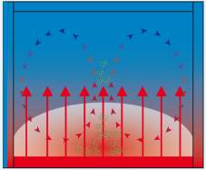
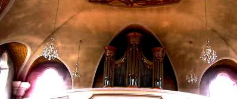

Die stationären Kachelöfen und offene Kaminfeuerungen strahlten neben ihrer Warmluftabgabe in den Raum hinein und führten dann - soweit Tag und Nacht betrieben - auch durch Strahlungsausgleich zwischen den Wänden zu angenehmen Umgebungstemperaturen. Und das bei geringem Energieverlust, da die flüchtige Raumluft bei stetiger Durchheizung geringer erhitzt zu werden braucht und die Wärmeenergie in speicherfähigen Umgebungsflächen "festgehalten" wurde. Wobei das Speichern der Heizwärme im massiven Kachel- oder Grundofen selber auch Nachteile beim Heizenergieverbrauch hat: Deutlich wird das, wenn wir uns vorstellen, die Heizung nur eines Holzscheits dem Raume nutzbar zu machen. Während sein Abbrand in einem offenen Feuer noch gut erwärmend wirkt, würde sein Abbrand im fetten Speicherofen vielleicht nicht mal an dessen riesiger Oberfläche spürbar sein. Auch die "Trägheit" der Wärmeentwicklung an der Ofenoberfläche nach dem Anzünden des ersten Scheites ist ein deutlicher Hinweis auf die wärmetechnische Ineffizienz und Vergeudung - ähnlich bei eingebetteten Heizrohren in Boden, Decke oder Wand, die ja auch ohne Einbettung mehr nutzbare Wärme in den Raum liefern und nicht zur Inbewegungsbringung des massiven Einbettmaterials (Stein, Mörtel, ...) verschwendet werden. Obendrein liefert das wärmende "Rückgrat" der Kaminanlage auch eine bessere Ausnutzung der heißen Rauchabgase in den daran anschließenden Räumen des ganzen Gebäudes.
Die Strahlungsheizung ist dem Menschen auch physiologisch naturgemäß. Der menschliche Körper kann über die Haut 99% der auf ihn einwirkenden Wärmestrahlung aufnehmen. Seit urdenklichen Zeiten ist er der Sonnenstrahlung / Solarstrahlung ausgesetzt, seine Körperkonstitution ist auf die Sonne eingerichtet. Sobald es aber zu feuchtwarmen Luftströmen kommt, kann es auch auf die Gesundheit gehen: Wer hat noch nichts gehört von Föhnschmerzen und den seuchengefährdeten Tropen? Wenn wir feuchtwarme Atemluft einatmen, müssen wir neben der Luftkühlung unseres Körpersystems zusätzlich zum Temperatur- und Feuchteaustausch über die fußballfeldgroße Lungenoberfläche die Wasserkühlung einschalten und beginnen notgedrungen selbst im Sitzen zu schwitzen. Das fordert unserem Körper Energie ab, die dann der Immunabwehr fehlt. Ein leichter Luftzug - und schon sind wir verschnupft, droht Husten Schnupfen, Heiserkeit, Asthma und Allergie.
Genauso "bewährt" sich unsere moderne lufterhitzende "Tropenklima"-Heizung mit Radiatoren und Konvektoren in abgedichteten Räumen, schlauerweise betrieben mit Nachtabsenkung, was dann jeden Morgen zum Losdonnern der Heizgeschütze führt und riesigen - als dummerweise oft den Fensternfugen zugeschriebenen - staubbeladenen luftzug erzeugt:
Über 1/3 der deutschen Wohnbevölkerung sind inzwischen Allergiker, mit 8.000-10.000 Asthmatoten jährlich sind wir Deutsche Europameister auf dem Kontinent, nur das feuchte Irland hat hier noch mehr zu bieten. Dank der vereint Anstrengungen der Dämmstoff-, Heizungs- und Lüftungsindustrie und ihrer politischen, beamteten und nicht allzu selten wohl auch geschmierten Helfershelfer werden wir Irland aber bald übertroffen haben. Absaufende Dämmpakete, überdichte Schimmelbuden, verschleimte Lüftungsanlagen und schadstoffverwirbelnde Heizsysteme dienen alle auch diesem Ziel. Auch im Museums- und Kirchenbereich sind asthmatisch erkranktes Personal und temporär sporenbelastete Besucher inzwischen ein immer dringlicheres Thema.
Die Abschaffung der Praxis durch die Theorie
Durch den 1885 für Prof. Hermann Rietschel eingerichteten Lehrstuhl für Heizung und Lüftung an der TU Berlin wurde die Nachahmung der Solarstrahlung durch den heizenden Menschen eingestellt. Die Watt´sche Dampfmaschine hielt als Dampfheizung Einzug in der Bautechnik. Rietschel "erfand" den lufterhitzenden Rippenheizkörper inkl. seiner Berechnungsgrundlagen. Dieser Einbruch "moderner" Technik in das praktische Erfahrungsumfeld revolutionierte seitdem die energetisch und gesundheitlich bewährte strahlungsoptimierte Heizung zur energieverschleudernden und krankmachenden konvektionslastigen Heizung. Nun pfiff vormittags und abends, wenn man von der Arbeit kam und den schlauerweise abgekühlten Raum wieder behaglich haben wollte, überhitzte Luft aus dem Bauwerk, nun zog es an allen Ecken und Enden wegen der heizungstechnisch erzwungenen Luftumwälzung wie Hechtsuppe, nun wurden die Raumschalen schwarz wie Dampflokomotiven und die teure Heizluft in Groß- und Kleinräumen staute sich an der Decke, ohne dort irgendwelche Nutzer mit Wärme versorgen zu können. Die gleichwohl vorhandenen Vorschläge und Versuche, nun auch das Prinzip der strahlungsoptimierten Heizung technisch weiterzuentwickeln, blieb auf Einzelbeispiele beschränkt. In den seit dem 19. Jh. erscheinenden Jahrgängen der Verbandszeitschrift "Der Gesundheits-Ingenieur", vorm. "Der Rohrleger und Gesundheitsingenieur" kann die Entwicklung nachgelesen werden. Resultat der Fehlorientierung der Ingenieurmajorität: Überdimensionierte Heizanlagen, irre Regelungen - vorteilhaft nur für Planer, Gutachter, Hersteller und Lieferanten.
Folgende Abbildung stellt das favorisierte Prinzip der Konvektionsheizung als Zimmer-Taifun dar:
"So war es bisher:
Konventionelle Heizung
(Konvektionswärme)

Raumluft wird durch den Heizkörper der konvektionslastigen Heizung erwärmt und steigt auf.
Die Luftströmung wirbelt Staub, Milben und Bakterien auf. DerFußbodenbereich und kritische Raumecken bleiben kalt.
Diese Abbildung zeigt die Folgen der nachtabgesenkten Heizkörperheizung deutlich. Die Pfeile versinnbildlichen den Heizluftstrom, der die Ecken ausspart und
dort für niedrigere Temperaturen, Kondensat, Beschimmelung und Balkenauflagervermorschung verantwortlich ist (Grottenfalsch: "Wärmebrücke").
Bildquelle: raum&zeit 25. Jg. Nr. 144, 11/12.2006 nach Angaben von Konrad Fischer

Dreckablagerung im Umfeld der nachtabgesenkten Konvektionsheizung.
An nächtlich ausgekühlter Wand lagert sich der frühs vom sinnigerweise hochgeheizten Rohr verschwelte Staub liebend gerne an. Pfui Deibel!
Auch die Bankheizung im Kirchenraum durch hocherhitzte Wärmestrahler konterkariert das eigentliche Ziel. Ihre hohe Wärmeabgabe erzeugt raummittig großen Luftauftrieb, der den Dreck und Staub hochwirbelt und an den kühlen Außenwänden im Konvektionsabtrieb ablädt. Als kalte Zugluft im Fußbereich kommt der Luftstrom dann wieder im Kirchengestühl an.
Ähnlich ist die Fußbodenheizung und die wirkungstechnisch mit ihr verwandte strömungsreduzierte Luftheizung von Großräumen mit bodennahem Luftauslaß zu verstehen. Sie erzeugt zwar keinen dauernden Konvektionsauftrieb, regt aber gleichwohl die langsam erhitzte Luftschicht am Boden zu plötzlichen Auftriebsbewegungen an. Die stoßweise aufsteigende erhitzte Luftschicht erzeugt wiederum erhöhte Verschmutzung und Kondensatdurchfeuchtung der systemtypisch kühlen Wände, in Großräumen vorrangig der dem kritischen Blick etwas entzogenen unterkühlten Decken, (wg. Holzbalkenauflager vermorschungsgefährdeten) Wand-Decken-Ecken und Raum-Inventar wie Emporenausstattung, Wand- und Deckengemälde, Stuckleisten, sonstiges Dekor, Altar und Orgel.

Die Errungenschaft der Niedertemperatur-Fußbodenheizung darf also auch skeptisch gesehen werden. Abgesehen davon, daß sie im Gegensatz zur Sonne nicht den Körper über seine gesamte Länge, sondern über die Fußsohlen erwärmt, stört sie dort die natürliche und zur Körperkühlung physiologisch erforderliche Wärmeabgabe und erzeugt die oben dargestellten Warm- und Schmutzluftwalzen im Raum. Daß die Fußbodenheizung furchtbar träge ist, verweist auf ihr anderes Problem: Sie schüttelt mit teuer Energie erst mal die vielen schweren Estrichmoleküle durch, bis sie sehr umständlich endlich die Bodenoberfläche so durchwämrt, daß dort Wärmestrahlung an den Mensch und Raum abgegeben wird. Dat is dolle Energievernichtung und kostet sinnlos! Wobei ein paar qm hautwarme Badfliesen natürlich das Kraut nicht fett machen und stellen vielleicht auch einem echten Energiegeizling gerade noch machbaren Luxus dar, vor allem wenn zusätzlich der Handtuchhalter als flinker und direkter Wärmestrahler genutzt wird.
Themenlink: Forum Haustechnik-Dialog - Versprödete Kunststoff-Fußbodenheizung leck
Frage: Was ist also der Unterschied zwischen einer Strahlungsplatte an der Wand und einer Fußbodenheizung? Das Wirkprinzip ist doch an sich dasselbe: Es wird eine Fläche erhitzt, die dann dank Bauteiltemperierung Wärme abstrahlt und in Abhängigkeit ihrer Übertemperatur auch Heizluft-Konvektionsströmung ingangsetzt.
Antwort: Stellen Sie sich mal die Wirkung auf den angestrahlten Körper vor. Wer läuft schon gern den ganzen Tag auf glühenden Kohlen? Vom Nacktbereich Badezimmer mal abgesehen. Und dann der sich konvektionsbedingt ausbildende Warmluftsee, der sich bei genügender "Füllung" nach oben entladen muß. Inkl. Staubluftaufwirbelung und ineffiziente Systemträgheit.
Zudem ist doch die Wand bzw. Decke (Saal unter Kaltdach) die abkühlende Fläche und insofern am meisten kondensatgefährdet. Warum
also die Wärme am Boden "vergeuden", inkl. "Verschattungsproblem" an der dann doch etwas unterversorgten Wand/Decke und Erwärmungsprobleme in den
wärmeströmungstechnisch unterversorgten Innenraumecken, in denen es ja am liebsten schimmelt, pilzt und morscht (von Schwachverständigen gerne falsch
interpretiert als "Wärmebrücke" (Ausnahmen: Stahlbetonbalkonplatten, die an Unterseite überstark auskühlen und an Oberseite winters dank massiver Brüstung
gegenüber tiefstehender Wintersonne meist verschattet sind, reduzierte Mauerstärke durch Nischen, Rollokästen ...))?
 So kann eine ursprünglich weiße Wand nach kurzer Zeit aussehen, wenn eine vulkaneruptive
Fußbodenheizung Staub, Ruß, Weihrauch und Feuchte raummittig nach oben transportiert und dann erst an der
Decke, dann an der Wand - vergesellschaftet mit immer weiter zunehmender Kondensatnässe - ablagert.
Selbstverständlich tragen modern-überdichte Fenster wesentlich zu der Überfeuchte bei, die diesen
Versauungseffekt nach besten Kräften fördert. Daß der meiste Dreck über Stahlbetonflächen -
in dieser Wand als Fertigbauteile für Stützen und Fenstergewände verwendet - und Mörtelfugen
(beide Baustoffe typischerweiseobendrein sehr feuchterückhaltend!) hängen bleibt, ist natürlich kein
"Wärmebrückeneffekt", der durch Außendämmung - so der typische Scherzpertenrat - zu beheben
wäre. So sieht übrigens die Decke aus:
So kann eine ursprünglich weiße Wand nach kurzer Zeit aussehen, wenn eine vulkaneruptive
Fußbodenheizung Staub, Ruß, Weihrauch und Feuchte raummittig nach oben transportiert und dann erst an der
Decke, dann an der Wand - vergesellschaftet mit immer weiter zunehmender Kondensatnässe - ablagert.
Selbstverständlich tragen modern-überdichte Fenster wesentlich zu der Überfeuchte bei, die diesen
Versauungseffekt nach besten Kräften fördert. Daß der meiste Dreck über Stahlbetonflächen -
in dieser Wand als Fertigbauteile für Stützen und Fenstergewände verwendet - und Mörtelfugen
(beide Baustoffe typischerweiseobendrein sehr feuchterückhaltend!) hängen bleibt, ist natürlich kein
"Wärmebrückeneffekt", der durch Außendämmung - so der typische Scherzpertenrat - zu beheben
wäre. So sieht übrigens die Decke aus:

Logisch, daß der Verdreckeffekt vorzugsweise an den Wänden und Decken über der Orgelempore stattfindet, mit einem unübertreffbaren Höhepunkt hinter der Orgel /dem Orgelgehäuse selbst. Warum? Weil diese Zone im Strahlungsschatten der Fußbodenheizung im Kirchenschiff liegt und so etwas weniger Wärme abkriegt. Die deswegen kühleren Flächen müssen folglich besonders leiden und sind so bevorzugte "Angriffspunkte" für Feuchte, Kondensat, Dreck, Staub und Ruß. Ein schwarzer Teufel, unser pech-und schwefeliger Bruder, würde sich also bestimmt hier, hinter der Orgel, niederlassen, wenn mal das tägliche Weihwasser ausginge.
Gegen von außen nachstoßende Feuchte (auf Mauerkrone liegende Rinne / hinterläufige
Fensteranschlußfugen zu Gewändesteinen und Sohlbank leckt in zweischaliges Mauerwerk, Regen rinnt an
Innenmauer herab und befeuchtet Wandquerschnitt) hilft auch keine Wärmeversorgung: Die Wand bleibt nach Sanierung
nass.

Methylzellulosehaltiger Kalkanstrich auf Schellackschicht vermag die Lösung selbstverständlich nicht zu bringen.
So sehr können leichtfertige Herstellerempfehlungen auf feuchtebelastetem Untergrund in die Hose gehen.
Das beschimmelt trotz Temperierung auch dank organischer "Verbesserung" der Kalktünche,
bis der Raumnutzer erkrankt.
Man muß der Sache schon etwas genauer auf den Grund gehen, bevor man auf Herstellerberatung oder selbst
zusammengereimtes Fachwissen und -im Fertigstellungsstreß der Baustelle bevorzugt an größtanzunehmende
Fehldiagnosen vertraut.